2. Introduction to Developing Trading Systems
© The Author(s), under exclusive license to APress Media, LLC, part of Springer Nature 2024
V. DolzhenkoAlgorithmic Trading Systems and Strategies: A New Approachhttps://doi.org/10.1007/979-8-8688-0357-4_2
2. Introduction to Developing Trading Systems
Viktoria Dolzhenko1
(1)
San Jose, Costa Rica
To move on to the next chapters, which contain specific information about the architecture and technical solution of my system, we must consider the basic concepts related to stock trading. If you know what types of markets exist, how limit orders work, and what anti-Martingale money management is, you can skip this chapter and move on to the next one. But if you want to create your own trading system and don’t know where to start, then I strongly recommend reading this chapter so that you don’t have questions when studying further topics.
In this chapter, we will briefly review the general theory of exchange trading, consider the approximate composition of a trading system, and dwell in detail on the formation of a trading theory, since this is the main topic of this book. We will also study the main approaches to capital management and risk control and touch on the topic of testing and optimization a little. This chapter, in fact, is just a bit of the knowledge that is necessary to start creating your own trading robot but without which the further steps are impossible.
General Theory
First, we need to understand what stock trading is. To do this, let’s look at the basic concepts in simple terms.
-
An exchange is a kind of organized trading platform where buyers and sellers meet to make purchase/sale transactions in financial instruments such as stocks, bonds, commodities, and currencies.
-
A broker is an intermediary between the investor (trader) and the exchange. It provides access to stock trading, fulfils customer orders, provides market information, and provides various financial services.
The relationship between the broker and the exchange consists of two main points. First, this is the order execution chain. This is when a broker executes various orders from investors, sending them to the exchange for processing by the exchange itself, thereby ensuring that traders interact with the real market. It is worth noting that the broker can provide access not only to one specific exchange but to many different ones, which allows the trader to expand their working hours and the list of financial instruments with which they can work.
Second, the broker provides traders with current information on the state of the market, analyst reviews, news, and other data that can help make a trading decision. The broker also conducts a technical analysis of the trader’s transactions, showing the status of orders and the movement of funds in the account.
In addition, some brokers provide advice and counsel to clients regarding their investment strategies and portfolio state. Or they can even directly manage clients’ financial accounts. Thus, the broker and the exchange are closely interconnected in the process of exchange trading, where the broker acts as an intermediary, providing traders with access to real exchange markets and providing them with the necessary services and facilities for successful participation in trading.
When people talk about financial instruments, they mean anything that can be bought or sold to make or save money. For example, company stocks, bonds, debt obligations, and even cryptocurrencies such as Bitcoin and Ethereum are all financial instruments. These tools help people invest and manage their finances.
Let’s take a closer look at the main types of these financial instruments.
-
Stocks. In short, a stock is ownership in part of the company’s property. Traders who hold shares are called shareholders.
-
Bonds. These are debt securities that represent some kind of promise by a company or government to repay the trader’s borrowed funds with interest. But unfortunately, they may not keep their promise.
-
Commodities. These are the most tangible assets—real physical goods such as gold, oil, or grain—which can be bought and sold on the market.
-
Currencies. The simplest asset is the monetary units of various countries that have the right to be traded on the foreign exchange market.
-
Derivatives. These are financial instruments whose value depends on changes in the price of another financial instrument, called an underlying asset. Simply put, derivatives “derive” from another asset and allow investors to bet on changes in its value. Examples include futures, options, and swaps.
-
Indexes. They can easily be thought of as a portfolio of stocks or other financial instruments that represent the overall performance of a market or sector.
-
Investment funds. These are funds that pool money from different traders to invest in a variety of assets.
-
Cryptocurrencies. This is the newest type of asset. Cryptocurrencies are decentralized digital currencies that use cryptography to ensure transaction security.
It’s also worth mentioning dividends. Some companies pay out a portion of their profits to their shareholders. Dividends are paid to attract new shareholders and reward old ones. The amount paid is directly proportional to the number of shares held by the holder. Overall, dividends are an important aspect for investors, providing them with additional income from owning shares in a company. Finally, it is worth adding that dividends are not only paid to stockholders; some types of bonds, investment funds, exchange-traded funds (ETFs), and derivatives can also be a source of this income.
The concept of a financial instrument goes hand in hand with the concept of a ticker, which is a unique symbolic code. It is used to identify a specific asset in the financial market. A ticker usually consists of several letters that are associated with a specific company, currency, commodity, or other type of financial asset. They make it easier to identify and track price changes in the market because they are a compact and unique designation for each asset.
The following are some examples of tickers:
-
TSLA: Tesla Inc. stock ticker
-
JPYUSD: Ticker for the Japanese yen to U.S. dollar currency pair
-
CC1!: Ticker for the commodity Cocoa
-
ADAUSD: Ticker for the Cardano cryptocurrency against the U.S. dollar
Order Execution
Now that you know what a financial instrument is, you need to understand how to sell and buy it. To carry out these actions, the broker provides us with such a tool as an order. In trading, an order is an instruction sent from a trader to a broker or trading platform to execute a trade in a financial market. The order specifies what operation the trader wants to perform (buy or sell) and also determines the main parameters of the transaction, such as volume (number of assets) and price. Any order contains special characteristics, such as order type, order direction, instrument ticker, and volume.
Let’s take a quick look at what each characteristic means.
-
Order type. This determines the way a trader can interact with the market and implement their trading strategies. The main types are Market, Limit, Stop Order, Stop Limit Order, Take Profit Order, Stop Limit For Sale, Market On Open, Market On Close, Market If Touched Order, and One Cancels The Other Order.
-
Direction of the Order. This indicates the trader’s desired action in relation to the asset. It determines whether the trader wants to buy or sell an asset. Two possible directions are Buy Order and Sell Order. Buy expresses the trader’s desire to purchase an asset, and Sell expresses the trader’s desire to sell.
-
Volume. This is the quantity (of shares, bonds, etc.) that the trader wants to buy or sell
-
Price. For limit orders, this is the price level at which the trader wants to carry out a transaction, for stop orders, upon reaching which the order is activated.
-
TimeInForce. This indicates the duration of the order’s relevance.
In fact, there are only two main types of orders: market and limit. Market reflects a trader’s request to buy or sell an asset at the current market price. Limit is the same request, but the purchase or sale must be carried out at the price level specified by the trader. To better understand the difference between them, let’s look at what happens after an order is created.
After it is created by the trader, it is sent to the so-called Depth of Market order book (order book). The order book is a representation of the interaction of all orders for the current financial instrument. Market orders make instant changes to the order book, while limit orders form a display of it, providing information about the price levels, resistance, and support levels at which market participants are willing to trade.
This happens because the nature of a market and limit order is different. The market order is immediately executed at the current buy or sell price, changing the level of supply and demand, and the limit order fixes the specific price at which the trader is ready to buy or sell a specific asset. Let’s take a look at Figure 2-1.
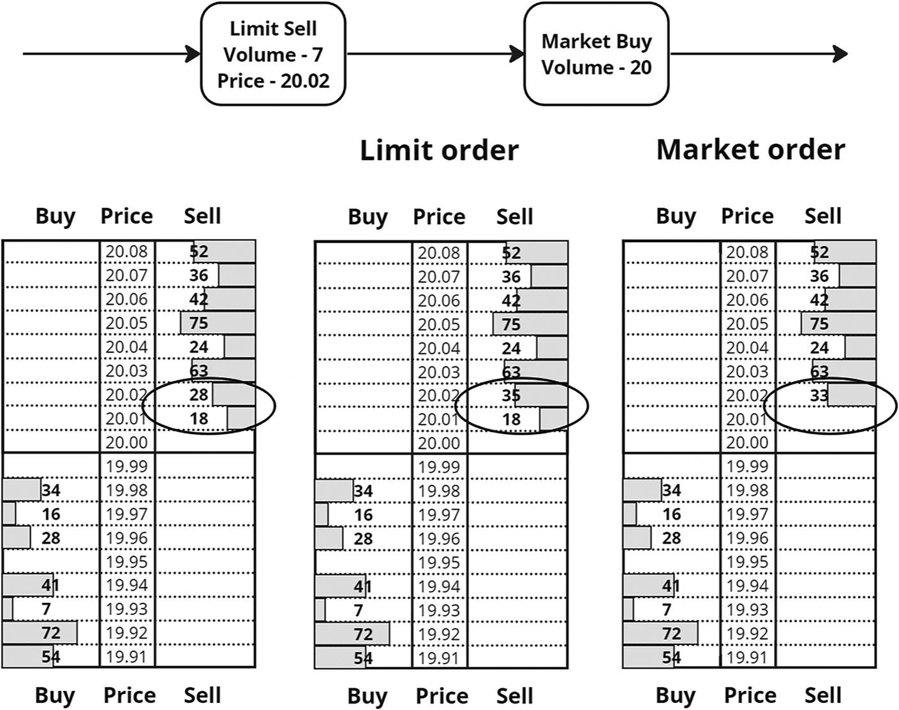
A data flow between the limit sell and the market buy with respective volumes. It lists the tables with buy, price, and sell. A few sell values are circled.
Figure 2-1
Limit and market purchase and sale process
First, we see the order book before the trader creates any orders. Then the trader created a limit sell order with a volume of 7 lots at a price of 20.02. On the second order book you can see how the total volume in the exchange order book at the level of 20.02 increased by exactly 7 units. It’s easy to guess that our trader’s limit order contributed to this. Next, the trader decides to create a market buy order with a volume of 20 lots. This order will work immediately: first, 18 lots will be purchased at a price of 20.01 and then another 2 lots at a price of 20.02. The example is given only from the point of view of the nature of order execution. It is unlikely that a real trader will make such a chain of orders on one instrument at the same time.
As you might have guessed, a financial instrument essentially has two prices; one is the maximum buy price (bid), and the other is the minimum sell price (ask). The combination of these two prices is called the quote. That is, a quote means the current price of a financial instrument at which a trader can buy or sell this instrument. The difference between these prices is called a spread, which depends mainly on the liquidity, volatility of the financial instrument and the cost of order processing at the broker. I’ll talk more about volatility later in this chapter.
Margin and Leverage
Some traders use a broker’s service such as leverage to increase potential profits. Leverage gives them the ability to trade larger volumes than their own funds allow. It shows the ratio of how many more funds can be used in a transaction compared to your own funds. For example, with a leverage of 1:50, a trader can trade 50 times more than they have in their account. This allows the trader to invest in more expensive assets that they would not have enough money for using only their personal funds.
Leverage implies the use of another concept: margin. Both of these concepts relate to the use of brokerage leverage but are expressed in different forms. Thus, margin is a specific amount of money that a trader is required to provide to participate in trades, while leverage determines how much these funds increase their purchasing power in the market. It turns out that the trader deposits margin as collateral, which ensures the execution of transactions and covers potential losses, and the broker provides the remaining funds.
There are two main types of margin.
-
Initial margin. This is the minimum amount to open a new position.
-
Maintenance margin. This is the minimum amount to maintain an open position.
It is worth noting that when using margin and leverage, the trader pays the broker a commission for providing borrowed funds. These expenses may reduce the overall profit from transactions. But the main drawback is the greatly increased risk in conditions of strong market fluctuations, since the losses can exceed the trader’s own funds. Therefore, it is important to use these tools with caution.
Composition of the Trading System
For a trader to begin to think through the architecture of their trading system, they still need to know what it consists of and what its main purpose is. Let’s start with the goal.
The goal of any trading system created will most likely be to obtain a main or additional source of income. But bad news—we will not be able to assess the potential of the system either at the idea stage or at the testing stage. The efficiency will be visible only when the minimum set of necessary functionality is developed and when the system is tested in real trading. Therefore, the stage of determining the financial goal for the trading system being developed can be a thankless task.
But this minus more than outweighs the plus that the more time we invest in developing and thinking about the strategy and functionality itself, the higher the potential efficiency. It turns out that our main goal is the continuous improvement of the system. This is our guiding star and our motivation. After all, our financial results will be directly related to this strategic goal.
With this goal figured out, what’s next? The trader needs to come up with their own trading strategy, test it, think through risk control and money management, and evaluate the effectiveness of the system. For each of these tasks, the trading system should have its own separate module. Each of these key modules will perform specific functions. Moreover, these modules must work interconnectedly, providing a full cycle of trading operations. Effective interaction between them is the key to the successful operation of the trading system.
Now let’s look at these main modules:
-
Formation of a trading theory. This module is based on a multistep process that includes various steps such as choosing an approach (technical analysis, fundamental analysis, etc.), choosing a market structure to trade (volatile, bearish, bullish, etc.), choosing a time frame, choosing a trading strategy, and creating rules trading and specific signals generated based on these rules.
-
Testing. This is an important step before using the system in real markets. This includes the selection of market data, determination of evaluation criteria, preliminary testing, backtesting, forward testing, and evaluation of results.
-
Capital management. The main goal here is to ensure sustainability and minimize risks in trade. This includes choosing an approach to determine the optimal position size.
-
Risk control. This module closely intersects with money management and is responsible for ensuring financial stability and protection against potential losses. The purpose of the module is to determine the maximum level of risk, use stop-loss orders, diversify the portfolio, and reassess risks when market conditions change.
-
Efficiency mark. This is an important stage to determine its quality and potential success in the market. The main task is to calculate performance indicators such as profitability, Sharpe ratio, maximum drawdown, profit factor, and other metrics.
-
Optimization. This module is based on a dynamic process, the task of which is to find the best parameters and settings of the strategy to achieve maximum efficiency and profitability. Great importance is paid to optimization algorithms.
In my opinion, each of these modules is desirable but not required. After all, each algorithmic trader has their own path, and they can create a trading program that is completely unique in structure.
Trading Theory
If we do not want to play roulette, then before real trading, we must formulate our trading theory: the idea on which all deals will be based. The purpose of trading theory is to create a system of rules and strategies that allow a trader to make reasoned decisions about entering and exiting the market. Based on these rules, specific signals will be generated in the future. This is one of the most important stages of creating your system, so we will start with it.
Just as a plant cannot grow without a seed, a trading system will never become profitable without a quality theory. But how is one formulated? Where do ideas come from? There are actually a lot of options, and first, let’s highlight the main approaches in the formation of trading theories, and then I will talk in more detail about some of them.
-
Technical analysis. This method of analyzing financial markets relies on examining and interpreting price and trading volume charts to identify trends and predict future price movements.
-
Fundamental analysis. This method of analysis is based on the study of financial, economic, and other fundamental data to make trading decisions.
-
Mixed approach. This is a combination of technical and fundamental analysis. This approach uses both fundamental data and technical indicators to more fully and informedly predict market movements.
-
Automatic theory formation in algorithmic trading. In this approach, a trading strategy is created and optimized automatically using algorithms and/or machine learning. This method allows algorithms to analyze historical data, identify patterns and trends, and then generate trading signals and strategies based on this data.
-
Event trading. This is a sibling of fundamental analysis, but while the fundamental approach is primarily focused on the long term, event trading focuses on short-term price changes associated with specific events or news. Traders using this approach often seek to make a quick profit on the volatility caused by the market’s reaction to news. Event trading is a dynamic and fast-paced approach to trading that requires the trader to be alert to news and events occurring in real time and to respond quickly to create profitable trading opportunities.
-
Own unique theories. This is an interesting and creative approach where everyone can see a connection or pattern that has not previously been noticed by other traders.
As a result, the choice of a specific approach or a combination of them is a personal matter for everyone. Now let’s look at some of them in more detail.
Technical Analysis
Technical analysis is perhaps the most popular. This is easily explained by the fact that it uses graphs, making it relatively easy to understand. Graphs can be easily understood and interpreted by most traders, making technical analysis accessible even to beginners. Additionally, technical analysis techniques are applicable to a wide range of financial instruments and markets, including stocks, commodities, and others. It turns out that this is one of the most universal trading tools. And its easy automation makes it easy to use in the development of robotic trading systems. This helps traders use strategies without constantly monitoring the market. Another advantage is that technical analysis uses historical data for testing, which makes it possible to easily analyze strategies.
Technical analysis includes different areas, each of which focuses on different formats of price movement.
These are the main functions of technical analysis:
-
Graphical analysis
-
Indicators and oscillators
-
Trend analysis
-
Geometric analysis
-
Fibonacci retracement and extension
Graphical Analysis
Graphical analysis means using visual representations of price activity to make trading decisions. The basic idea is that price information is reflected in charts, and analyzing these charts can help traders predict future price movements and come up with the right strategies. This allows you to identify trends, resistance, and support levels, as well as patterns and optimal entry and exit points. Graphical analysis mainly uses candlestick, bar, line, point, figure, and Renko charts. You can see examples of these charts in Figure 2-2.
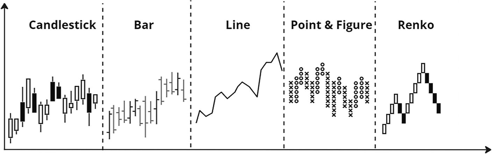
A graph plots box whiskers for candlesticks, vertical lines for bars, an increasing trend for lines, data points for points and figures, and stacks for renko.
Figure 2-2
Types of charts
Indicators and Oscillators
Indicators and oscillators are mathematical expressions that are based on price and volume activity in the market. They can be visualized on a chart and can be conveniently used for analysis when making trading decisions. Indicators and oscillators help traders assess the current market situation, identify potential reversal points or continuation of a trend, and determine overbought or oversold levels of an asset.
Indicators also help traders determine general trends, the direction of market movement, and the strength of the trend. They are often represented on charts as lines or curves, plotting values on a price axis or separate scale. Indicators are varied and can be classified according to their main functions.
The following are several main types of indicators:
-
Trend indicators. Examples are Moving Average (MA), Moving Average Convergence Divergence (MACD), the Bollinger Band (BB), and Parabolic SAR. They help determine the general direction and strength of a trend.
-
Oscillators. They are typically used to measure whether a market is overbought or oversold and provide signals about possible turning points. They usually fluctuate around a central line (such as the zero line) and are charts often located below the main price chart. Examples including Relative Strength Index (RSI), Stochastic Oscillator, Commodity Channel Index (CCI), and MACD.
-
Volume indicators. Examples include On-Balance Volume (OBV), Chaikin Money Flow, and Volume Price Trend (VPT). Their function is to analyze trading volumes and help in assessing the strength of a trend and confirming its direction. And some still depend not only on volume but also on price such as Volume Weighted Average Price (VWAP) and Money Flow Index (MFI). They combine price and volume information to help determine the average price based on trading volume.
-
Volatility indicators. Examples are Bollinger Bands and Average True Range (ATR). They reflect price volatility, allowing you to identify support and resistance levels, as well as when the market is overbought or oversold.
-
Momentum indicators. Examples include Relative Strength Index (RSI), Momentum, and Stochastic Momentum Index. Their function is to measure the momentum of price movements and help identify possible turning points.
-
Cyclical indicators. Examples include Detrended Price Oscillator (DPO) and Schaff Trend Cycle. They highlight cyclical components in price data, which can help predict future trend changes.
-
Other indicators. Examples include Ichimoku Cloud, Elliott Wave Theory, and Gartley Pattern. Their function is to identify certain formations and structures on charts, providing signals about possible price movements. The list of indicators and their possible functions does not end there.
Indicators are also divided into leading and lagging indicators. Leading indicators seek to predict future price changes and trends before they happen. Examples are RSI and Stochastic Oscillator. Lagging indicators reflect past price changes and trends, confirming the current state of the market. Examples include MA, Bollinger Bands, and MACD.
The choice between leading and lagging indicators depends on the trading strategy and style of the trader. Some prefer leading indicators to try to identify potential market changes in the early stages, while others prefer lagging indicators to more reliably confirm the current trend.
It is important to remember that no single indicator guarantees success in the market, but combining them and analyzing supporting factors may be a more effective approach.
Trend Analysis
Trend analysis is aimed at identifying the general direction of price movement of a particular financial instrument. The essence of this method is to determine the current trend and understand whether it will continue or change in the future. Traders are looking for optimal points to enter a trade in the direction of the trend and exit it before its possible change. Trends can be divided by duration: short-term, medium-term, long-term. But still, the main division occurs in the direction of the trend (see Figure 2-3).
-
Upward. There is a gradual increase in price. The graph looks like a staircase going up when viewed from left to right.
-
Downward. There is a gradual decrease in price. The graph looks like a staircase going downward when viewed from left to right.
-
Sideways. Prices move in a horizontal range without a clear dominant direction.
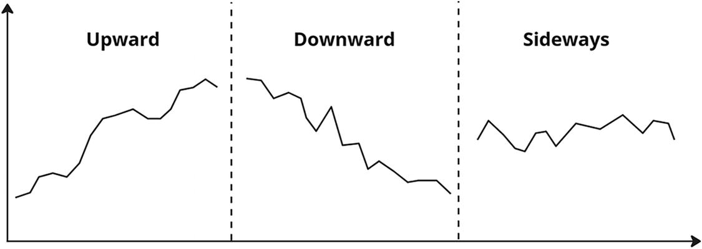
A line graph plots an increasing trend and labels it as upward, a decreasing trend as downward, and a fluctuating trend as sideways.
Figure 2-3
Types of trends
Geometric analysis is mainly represented by the study of graphic patterns, searching for them in market data and predicting future price movements based on them. Basic geometric shapes: triangles (ascending and descending), diamond, wedge, flags, double peaks, head and shoulders, and others.
Fibonacci Retracement and Extension
Fibonacci retracements and extensions are technical analysis tools based on Fibonacci numbers. They are used to determine potential support and resistance levels in financial markets. Fibonacci retracement uses levels based on the Fibonacci number sequence (e.g., 23.6%, 38.2%, 50%, 61.8%, 76.4%). After the price of an asset rises or falls, traders can use the Fibonacci retracement tool from the initial move to identify possible levels at which the price may change direction. For example, 38.2%, 50%, and 61.8% are often used as potential support and resistance levels (50% is not a Fibonacci number but is often used). If the price of an asset rises and then experiences a correction, a trader can apply Fibonacci retracement from the start of the move to the end of the correction to identify support levels. Fibonacci extensions also use Fibonacci numbers, but instead of retracement levels, they are used to determine the levels at which the price can complete a move or continue in the same direction.
Traders can use Fibonacci extensions to determine possible future levels where the price may go. The 161.8%, 261.8%, and 423.6% levels are some of the Fibonacci extension levels often used by traders. If the price begins to move higher after a correction, a trader can apply a Fibonacci extension from the beginning of the movement to the end of the correction to identify potential resistance and support levels.
Fundamental Analysis
Fundamental analysis in trading is a method of market analysis based on the assessment of fundamental factors affecting the value of financial assets. The basic idea is to estimate the intrinsic value of an asset and then compare it to the current market price to identify potential overvaluations or undervaluations.
To make a decision to buy/sell the financial instrument in question, a trader needs to analyze the company’s financial indicators, such as profit and loss statements, balance sheets, and cash flow statements; evaluate the company’s management; and of course evaluate the trends and prospects of the industry in which it operates this company. Also, an important stage is the assessment of competitors and their market shares, assessment of the impact of global and political events on the company’s activities, and assessment of profitability and dividend payments. As you can see, a colossal amount of work is being done. Therefore, given the volume of data being studied, fundamental analysis is widely used by investors to make long-term decisions.
It is important to emphasize that fundamental analysis can be combined with other methods, such as technical analysis, to gain a more complete understanding of the market.
Mixed Approach
Technical-fundamental analysis in trading is an approach that combines elements of technical and fundamental analysis to make trading decisions. This method allows traders to evaluate assets, taking into account both their current value and trends obtained from technical analysis tools and the main factors influencing their value, obtained from fundamentals. This combination gives a more complete picture of the direction of price movement. Combining the two methods can help not only minimize the risks associated with a limited view of only the technical or fundamental side of the market but also provide more accurate forecasts and informed trading decisions. A trader can use technical indicators to confirm or refute fundamental signals and vice versa.
Volatility
It is worth mentioning such an important concept as volatility. Volatility in trading is a measure of price volatility in financial markets. This concept reflects the degree of fluctuation in asset prices over a certain period of time. The higher the volatility, the more significant the up and down price movements can be.
Volatility shows the following to a trader:
-
Describes how much asset prices can change in a short period of time. High volatility may indicate unstable times.
-
Serves as an important risk indicator. Higher volatility can mean greater potential gain but also greater potential loss. For example, with higher volatility, larger stop loss levels should be set.
-
Affects the choice of strategies. Volatile markets can provide more opportunities for profit, but they can also be riskier.
-
Affects the choice of analysis period, which may depend on the degree of volatility. For example, when volatility is high, traders may prefer shorter time frames to respond more quickly to market changes.
This concept refers to aspects of two main types of analysis: technical and fundamental. In the context of technical analysis, volatility can be seen as a key parameter for making decisions about entering and exiting trades. Thus, many technical indicators and strategies take volatility into account when generating signals. In fundamental analysis, fundamental factors such as news, economic events, and data can influence market volatility. For example, important announcements about large companies or changes in a country’s economic policies can cause prices to change dramatically. Thus, volatility is not a separate type of analysis but rather a factor taken into account within analytical approaches, be it technical or fundamental analysis.
In practice, volatility is assessed by a trader using volatility indicators. Examples are Volatility Index (VIX), True Average Range (ATR), Bollinger Bands, Chaikin Volatility, Volatility Stop, Volatility Momentum, and Market Facilitation Index (MFI).
Signals
We have dealt with the approaches to forming a trading theory. That is, by now the trader knows the necessary theory to generate their own trading strategy. Next, to the trader needs to define clear trading rules according to which the signals will be generated.
-
1.
Selecting one or more financial instruments for trading
-
1.
Choosing an approach for developing a trading strategy
-
1.
Formulating the conditions for opening a position
-
1.
Formulating the conditions for closing a position
Formulating entry and exit conditions in trading is the process of defining clear rules on the basis of which a trader makes a decision to enter the market (buy or sell an asset) or exit a position. These terms are based on the various aspects of market analysis that we have already covered. They must be clearly defined and are often subject to optimization and backtesting.
They can be roughly described as follows:
-
Entry conditions. First, we determine which condition or event will serve as a signal to open a position; then we determine which time chart the strategy will work; and at the end, if necessary, we need to receive confirmation of the signal through some additional indicator.
-
Exit conditions. First, we determine which signal or event indicates the need to close the position; and then we look for confirmation indicating a change in the direction of the trend, set the level at which the position is automatically closed to limit losses and the level at which the position is closed to take profit.
Let’s look at an example:
-
Conditions for opening a position: Buy when the price touches the lower Bollinger band on the daily chart and its width is at a relatively low level. Confirmation of the signal is the presence of oversold conditions on the RSI indicator on the four-hour chart.
-
Conditions for closing a position: Sell when the price touches the upper Bollinger band on the daily chart and its width becomes relatively high. Confirmation of the signal is the presence of overbought conditions on the RSI indicator on the four-hour chart.
Great, now we can generate trading signals based on these trading conditions. While entry and exit conditions are more general concepts, trading signals are specific instructions indicating the need to take certain actions in the market, such as buying or selling an asset.
For example, trading signals based on the conditions from the example earlier would look like this:
Signal to input
-
Daily chart
-
Price <= lower Bollinger Bands
-
BBW < 0.05
-
4 hour chart
-
RSI < 30
-
Exit signal
-
Daily chart
-
Price >= upper Bollinger Bands
-
BBW > 0.08
-
4 hour chart
-
RSI > 70
In practice, traders begin to follow the path taken by many and start with the now classic crossing of moving averages and then gradually learn more complex strategies and test them in practice. I think this is the right approach; without basic knowledge of indicators, it will be difficult to do anything worthwhile.
Capital Management
Let’s say a trader comes up with a promising trading theory and starts trading on the stock exchange without thinking about the size of each position. What could this lead to? The answer, it seems to me, is serious financial losses. Let me give you a clear example. Let’s say an experienced trader has $10,000 in capital and is engaged in short-term trading in the stock market. They decide not to follow any capital management strategy and instead invest their entire amount in four large and high-risk orders. Market conditions unexpectedly go wrong, and all four orders lose money due to sudden price declines. As a result, the trader loses up to 70% of their capital.
If the trader had decided to use even a simple capital management strategy, such as a fixed interest rate, the trader would have retained most of their capital. That is, we see that capital management not only helps reduce losses but also helps preserve capital in difficult market conditions. It turns out that the goal of capital management is to maintain and grow a trading account, avoid large losses, control risks, and help avoid emotional decisions.
Oddly enough, the most banal and effective way to manage capital is to divide capital into parts. Yes, you don’t need to put all your eggs in one basket. This is already clear to everyone, but what makes this management effective, unfortunately, is not for everyone. That same efficiency primarily follows from the optimal position size, and this size, in turn, depends on the method of capital management. There are quite a few of these methods.
Here are the main ones:
-
Fixed position size
-
Kelly criterion
-
Optimal f
-
Martingale
-
Anti-Martingale
-
Fixed proportional position sizing
Fixed Position Sizing
The fixed position sizing method implies a fixed position size for each trade, regardless of the current capital amount or risk level. This means the trader always risks the same fixed amount, or a fixed amount or a fixed percentage of their capital on every single trade. If a trader decides to work on a fixed volume (amount), then they need to set each time the exact and constant number of units (money) in which the financial instrument is measured, which they will always buy or sell. If they choose a fixed percentage, then they need to make a transaction for a constant fixed percentage of their current capital.
The first method is simple and straightforward, but it does not depend on the amount of capital and the volatility of the asset. With little capital, it becomes very risky. The second method automatically adapts to changes in capital, but volatility is also not taken into account and requires constant recalculation of the position size when the account changes.
For example, let’s say a trader has $10,000 in capital. At a fixed volume, after purchasing shares at $60 per share and a constant volume of 100 shares, they would be risking $6,000, which is more than half of their capital. This is not normal and about the same thing will happen if you wait for a fixed amount! The picture is different for a fixed percentage. If they decide to risk 1.5% of their capital on each position, then the maximum amount they can lose on one trade is $150. At a stock price of $60 per share, they can afford to buy 2 shares ($150 / $60). As you can see, this approach is more secure.
Kelly Criterion
The Kelly criterion is a formula proposed by American mathematician and statistician John L. Kelly in 1956, used to determine the optimal bet size under conditions of uncertainty or risk in money management. Most often, traders use this criterion for trading using leverage.
The basic Kelly formula looks like this:
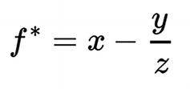
An equation. f asterisk = x, minus, y over z.
-
f*: The optimal share of capital to invest in each transaction
-
x: The probability of winning
-
y: The probability of loss (y = 1 - x)
-
z: The average win relative to the average loss
Based on the proposed formula, it is always necessary to risk a certain percentage of the total capital on each order. For example, if x is 0.05, then your bet on each order should be 5% of your total capital.
Let me give you a small example. Let’s assume that a trader trades using a strategy where for every 100 positions, 52 positions were losses and 48 were profits. This means our x = 48% and y = 52%. Substituting into the formula, they will take the following form:
- x = 0.48, and y = 0.52
In monetary terms, the total profit was $7,000, and the loss was $3,000. Then z will be equal to this:
- z = 7000/3000 ≈ 2.33
Then:
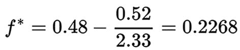
An equation. f asterisk = 0.48, minus, 0.52 over 2.33 = 0.2268.
It turns out that f* = 0.2268, or 22.68%. The risk on each position can be a maximum of 22.68% of capital.
We will also change the amount of profit and loss for clarity. Now the profit will be $3,800, and the loss will be $3,600.
Then: z = 3800/3600 ≈ 1,055
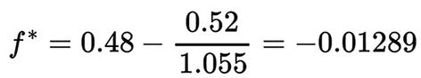
An equation. f asterisk = 0.48, minus, 0.52 over 1.055 = negative 0.01289.
This definitely means the account will go to zero.
Since this method has quite a few disadvantages, such as the need for a history of positions for a specific strategy, the need for constant recalculation (preferably after each trade), the lack of forecasting, or the frequent recommendation of using large bet sizes, many traders modernize it or use f* in a reduced form or consider the Kelly criterion as the size of the optimal leverage.
Optimal f
The main developer of the optimal f system is Ralph Vince. He was able to modernize the Kelly criterion, where he took into account different sizes of winnings and losses. This strategy operates on the assumption that a trader’s profit directly depends on how much capital they use in each transaction. The optimal f-ratio is the dynamically optimized percentage of capital used in each trade that maximizes the strategy’s overall profit. To find f, Vince introduced a concept called TWR, which stands for terminal relative wealth. TWR is an indicator characterizing the relative final capital, or, more simply, how many times the initial capital increases.
It is calculated by the following formula:
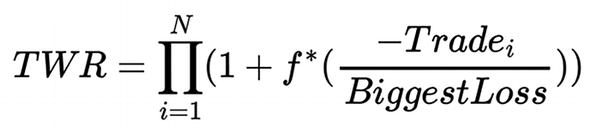
An equation. T W R = Pi, from i = 1 to n, open parenthesis, 1 + f asterisk, open parenthesis, negative trade subscript i, over biggest loss, double close parenthesis.
where N is the total number of transactions:
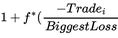
An equation. 1 + f asterisk, open parenthesis, negative trade subscript i, over biggest loss.- profit for a certain period,f* - share of capital,
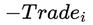
A text reads the following. negative trade subscript i. - profit or loss on that trade (with the opposite sign so that the loss becomes a positive number and the profit a negative number)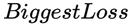
A text reads the following. Biggest loss. - largest loss per trade (this is always a negative number)When the optimal f deviates by only insignificant values, the value of TWR changes sharply, and the trader’s task is to find such f* so that TWR is maximum. TWR itself is maximized by searching f* from 0 to 1 with a step of 0.01.
This method is much closer to optimal position sizing in real life than the Kelly criterion. But at the same time, its main drawback is the impossibility of determining the optimal f during live trading, since it is based on past data. The optimal share for one trading period may be 25%, while for another period it may be 20%, and so on. A precise determination of the optimal share for the current situation remains impossible.
Martingale
Martingale is a capital management method used in stock trading that uses the principle of increasing position size when losing in order to compensate for losses. This can involve significant risks and is not recommended by many professional traders. The Martingale principle is to double the position size after each losing trade so that on the next profitable trade the trader can cover previous losses and even make a profit.
This method is based on the assumption that a winning trade will eventually occur and will offset all previous losses. However, it should be noted that Martingale does not take into account capital limits and can lead to significant losses if the market does not move in the desired direction and can create the risk of quickly losing all capital, especially with prolonged streaks of losing trades. For these reasons, most professional traders prefer more conservative capital management methods.
Consider an example where a trader sets an initial bet of 1% of their total capital, which is $10,000. If the first trade ends in a loss, the trader doubles their bet and risks 2% of their capital on the next position. In case of additional losing trades, the trader continues to double the bet size. When a trader closes a profitable trade, they return to the initial rate of 1% of capital.
These are examples of positions:
-
In the first position, the trader uses 1% of $10,000 ($100). The position is closed at a loss.
-
In the second position, the trader uses 2% of $10,000 ($200). The position is closed at a loss.
-
In the third position, the trader uses 4% of $10,000 ($400). The position is closed at a loss.
-
In the fourth position, the trader uses 8% of $10,000 ($800). The position is closed with a profit.
In this example, even after three losing positions, a successful fourth position allows the trader to return to the initial level. However, it should be remembered that with a long series of unprofitable positions, you can simply destroy your capital. Therefore, to reduce risk, some traders use lower odds instead of doubling the bet. But personally, I still advise you never to use it.
Anti-Martingale
The key element for both Martingale and anti-Martingale is changing the bet size. In Martingale, the rate increases after a losing position, while in anti-Martingale it increases only after a profitable position and decreases after a losing one. The essence of anti-Martingale is also simple, as simple as one, two, three. If the first position in the series brought a profit, then the next position is opened in the same direction, but in double volume; if the position brought a loss, then we reduce the volume accordingly.
The price level at which a new position is opened is chosen by each trader himself, following their trading strategy. But it is not recommended to open more than three orders. As in Martingale, you can use a smaller coefficient to increase the position (for example, not 2 times, but 1.3 times) or completely change the progression from geometric to arithmetic (that is, for example, change the position by 20 percent).
Anti-martingale is insidious in that if the forecast is unsuccessful, the profit on the first orders is very quickly covered by the loss on the last, most voluminous order. This can happen when a trader is mistaken in believing that they have caught a trend.
Fixed Proportional Position Sizing
Economist Ryan Jones proposed fixed proportional position sizing as a capital management technique. This strategy was developed to effectively balance risk control and profit maximization. The fixed proportional method is a kind of variation of the anti-Martingale strategy.
The concept of this method is that in the initial stages of trading, profits may be small, but at the same time, more stable results are provided over time. As the deposit increases, the profit margin also increases, which reduces overall risk. The main idea of the method is to determine a certain level, upon reaching which the trader can increase the traded volume by a certain number of lots.
Jones proposed using the concept of “delta” to define a fixed value, a certain proportion, upon reaching which a trader can increase the working size of a position. When the delta is reached, the traded lot size increases, and when losses exceed the specified delta, the lot size decreases. The Jones method allows you to simultaneously control both risks and profitability. Delta is a variable value in the calculation and is determined according to the trader’s trading method or style. The degree of aggressiveness of a trader’s trading depends on its size; the smaller its size, the more aggressive capital management is.
The formula for determining levels is as follows:
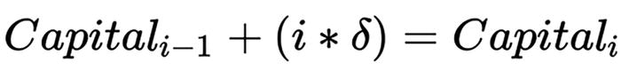
An equation. Capital subscript i minus 1, plus, open parenthesis, i asterisk delta, close parenthesis = Capital subscript i.
where:
i: The level number (often coincides with the number of lots)
Capital__i: The next level capital
Capital__i − 1: The previous level capital
𝛿: Delta
Let’s imagine that the trader’s initial capital is $5,000. They select a delta of $4,000 and trade one lot. Then to move to the next level, you need to solve this:
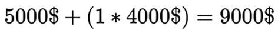
An equation. 5000 dollars, plus, open parenthesis, 1 asterisk 4000 dollars, close parenthesis = 9000 dollars.
Upon reaching this level, they will be able to trade two lots. This is the next level:
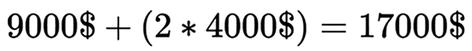
An equation. 9000 dollars, plus, open parenthesis, 2 asterisk 4000 dollars, close parenthesis = 1700 dollars.
At level 3, they will be able to trade three lots. And so on. As you can see, a trader can only influence the delta. It reflects the trading style: aggressive or less risky. There is also a situation when a trader begins to incur losses. In this case, to reduce the growth rate of losses and maintain the resulting profit, the reduction delta should be reduced (compared to the delta when the account grows). That is, the delta used to calculate the level of increased position size may exceed the delta required to reduce the position size in the event of a drawdown. For example, you can use a delta half as large as the growth delta or set it as a separate and independent reduction delta. Formulas for decline levels can be different and depend on the style of the trader. Figure 2-4 shows one way to reduce levels.
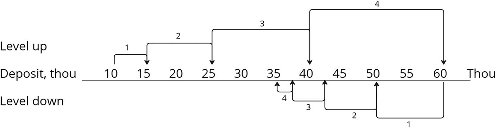
A dendrogram graph plots the level up, deposit through, and level down. The deposits 40 to 60 have the highest levels in the level-up category, whereas they are low in the level-down category.
Figure 2-4
Example of the process of changing levels
For example, if the delta of decline is half the delta of growth, then the decrease in the traded lot during the period of drawdown will occur twice as fast as its growth during the period of rise. Then the formula for calculating the reduction level will look like this:
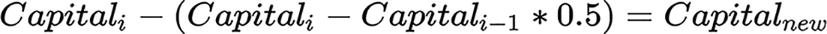
An equation. Capital subscript i minus, open parenthesis, Capital subscript i, minus, Capital subscript i minus 1, times, 0.5, close parenthesis = Capital subscript new.
where Capital__new is the capital of a new level.
Let’s imagine that a trader rose to level 8 and their account became equal to $150,000, the previous level was equal to $115,000, and they initially chose a delta equal to $5,000. The reduction level will be equal to the following:
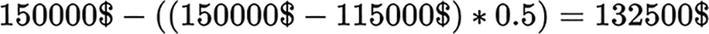
An equation. 150000 dollars, minus, double open parenthesis, 150000 dollars, minus, 115000 dollars, close parenthesis, asterisk, 0.5, close parenthesis = 132500 dollars.
Like any method, the fixed proportional method has its pros and cons. One of the main advantages of this strategy is the possibility of geometric profit growth if all conditions are met. Reinvesting profits and increasing trading volume can significantly increase profitability using this method, especially due to the use of delta. The degree of aggressive or conservative trading is determined by the chosen delta, where a small delta leads to a faster increase in volume.
However, the disadvantage of the fixed-proportional method is the long recovery from drawdown periods. The decrease in trading volume occurs much faster than its increase. However, this circumstance allows you to save profits received during periods of successful trading series. In addition, even such an aspect as choosing the optimal delta can take a long time. However, by thoroughly testing your strategy using the fixed proportional method, a trader will be able to optimally adjust all the variables to suit their needs.
Risk Control
Risk control in trading is a system that gives the trader control over possible losses. Simply put, this is a set of actions and calculations aimed at one goal: preventing the loss of a deposit and preserving profits as much as possible. Effective risk management in stock trading allows you to wait out difficult periods associated with unprofitable transactions. Each successfully passed period of losses without significant losses of the deposit indicates how effectively the trader manages risks. In this regard, capital management and risk control go hand in hand; they are closely intertwined, and often one means the other. This is easy to explain, since position size management plays a key role in risk control. By managing risks, a trader decides how many times they can close a position in the red and how much they can lose. That is, they strive to save money first and only then think about profitability.
Perhaps the main rule of risk control is to recognize that there are no 100% results and there will always be unprofitable trades. And its root is the permissible drawdown. Thus, deliberately reducing the average loss, for example reducing it by $100 per trade, has the same positive effect on the account as increasing the average profit by $100. That is, risk control directly affects the trader’s final profit.
There are several main approaches to risk control:
-
Maximum loss amount
-
Stop loss orders
-
Take profit orders
-
Trailing stop orders
-
Portfolio diversification
-
Monitoring market volatility
Maximum Loss Amount
To effectively manage losses during trading operations, it is critical to first determine the maximum percentage of risk that a trader is willing to bear for each individual position. As mentioned earlier, good capital management helps with this. An equally significant factor here is the limitation on the number of simultaneously open positions. For example, given that the established risk per position can be, for example, 0.3%, and the maximum risk per deposit is 6%, the number of simultaneously open trading transactions cannot exceed 20. This is a simple but effective method that is suitable even for a beginner.
Risk control for a certain time period (for example, a day, a week, or a month), which also includes a certain strategy for exiting a drawdown, is similar in nature. So, if a trader is faced with a series of unprofitable positions over the period under review, it is advisable for him to take a break. This makes it possible to limit losses and reassess the situation. For example, if the maximum loss for a day has been reached, it is recommended to end trading for the current day and resume it the next. The same applies to weekly and monthly limits, allowing you to effectively manage risks across different time frames.
Let’s look at an example. The trader has $10,000 on deposit. If they have an acceptable daily drawdown of $200, then the entire deposit will be lost after 50 trading days with losses. If the allowable daily loss is $100, then the trader will be able to survive 100 days with unprofitable transactions. With a maximum drawdown of $50, these periods increase to 200 days, with $25—up to 400 days.
Stop Loss Orders
A stop loss is a type of order that allows a trader to determine the highest level of potential loss while trading a single position. In practice, this means that when the price reaches the level at which the stop loss is set, this order is closed at a loss. Setting a stop loss order allows the trader to determine in advance the maximum amount of possible losses for a specific position, and this determination is made at the stage of opening the position. Pre-set stop orders are an effective tool for controlling risk and minimizing losses in rapidly changing markets.
Applying a strict stop loss rule, such as exiting a position if it loses 3% to 10%, is a common practice. But in turn, I will immediately make it clear that not everyone uses stop losses. My personal observations and analysis showed that for many strategies the use of stop losses was inappropriate. But if you use a stop loss as part of your strategy, it is important to honor the obligation to exit a position if the market does not move as expected.
Depending on whether the trader has opened a buy or sell order, the stop loss will be placed differently (see Figure 2-5).
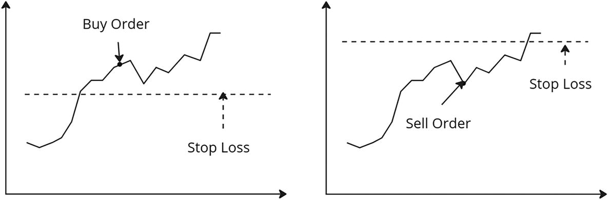
Two line graphs. Both graphs plot an increasing trend. Graph A has a horizontal stop loss line at the center with a buy order. Graph B has a horizontal stop loss at the top with the sell order.
Figure 2-5
Examples of stop-loss levels
Some traders prefer to use several types of stop signals for more flexible position management.
The main types of brake lights include the following:
-
Initial stop. This signal is related to the position’s entry level and can be expressed as a percentage or a fixed amount.
-
Trailing stop. This stop signal follows the price movement in the direction desired by the trader, changing as profits increase.
-
Take profit. This stop signal causes the position to be closed when a predetermined profit amount is reached.
-
Breakeven. This means moving the stop loss to the price where the breakeven level is. Often traders set this stop loss in an arbitrary place, which is fundamentally wrong. All movements must be carefully considered and should not be taken at random.
-
Timed stop signs. In case market behavior does not meet expectations, some professionals recommend exiting the position even if there is no financial loss. Timed stop signals remind you to exit the market if it is unclear what is actually happening.
In conclusion, setting initial stop losses is a special form of trading art. The ability to recognize false or true breakouts of resistance and support levels plays a key role in this skill.
Take Profit Orders
Take profit, as a type of stop loss, is a preset price level, upon reaching which the trader automatically closes their position with a certain profitable result. That is, the specified take profit level always exceeds the current market price (if the trader has placed a Buy Order) of the asset, and if the market price rises to a predetermined value, the broker automatically places a limit order to sell (see Figure 2-6).
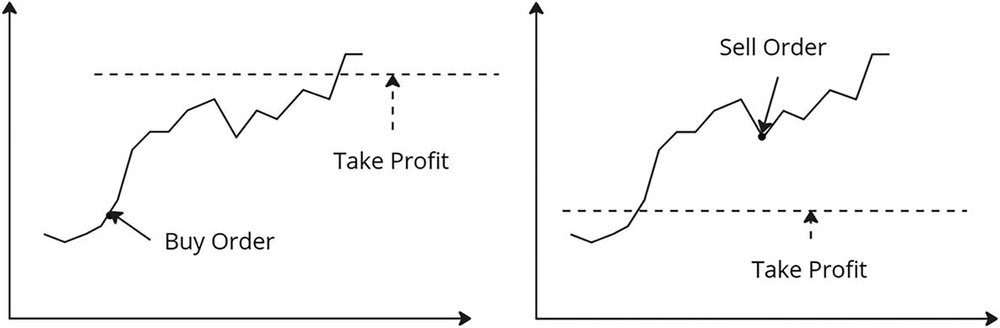
Two line graphs. Each plot has an increasing trend with multiple plunges. Graph A marks the rising edge as a buy order and the maximum limit as a take profit. Graph B marks the threshold as take profit and a trough as a sell order.
Figure 2-6
Examples of take profit levels
Many traders determine the take profit level based on key resistance and support levels. Another approach is to use Elliott wave theory, which suggests that markets move in cycles consisting of waves of different orders. Additionally, many traders prefer a customized approach to determining profit levels based on their own comfort level with risk management.
Trailing Stop Orders
A trailing stop is a dynamic order that is used in trading to automatically update the stop loss level in accordance with changes in market prices. This mechanism is similar to a regular stop loss but differs in that it is not set at a fixed price. Instead, it continuously monitors the current price of the asset and automatically changes the stop loss level when the price changes in a direction favorable to the trader; it also works like a regular stop loss if the price changes in an unfavorable direction.
Let’s look at an example. If a trader opens a position at a price of $50 (Buy Order) and sets Take-Profit (TP) at $55 and Stop-Loss (SL) at $45, then TP and SL will be automatically activated only when the levels are reached at $55 or $45, respectively. By setting limit orders at $55 and $45, the trader formally agrees to a maximum potential profit and acceptable loss of 10%. If a trader entered a trade at $50 with a target of $55 and the price moves up to $60, they do not receive the full profit from the move up. Or you can imagine the opposite situation, when the price reached $54 and instead of taking a profit, the trader decided to wait for the upward movement to continue, but as luck would have it, the price went down and dropped below $45. It’s also sad. It turns out that instead of a realistically achievable profit of several percentage points, the trader received a 10% loss. Figure 2-7 illustrates these situations.
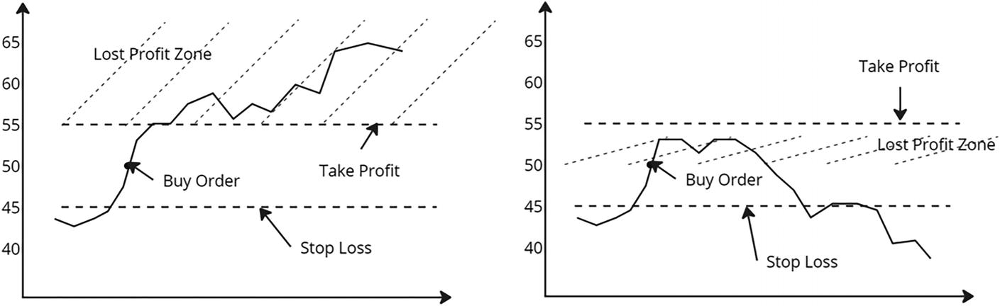
Two line graphs. Graph A has an increasing trend with a stop loss zone at the bottom, a take profit zone at the center, and a lost profit zone at the top. Graph B plots a fluctuating trend with the lost profit zone at the center.
Figure 2-7
Examples of profit losses without trailing stop order
To avoid such scenarios, you can set Take-Profit higher or not use it at all. However, in this case, the trader will have to constantly monitor the market and close manually. At the same time, Stop-Loss will remain at $45.
A trailing stop order prevents such situations. So in the previous example, a trailing stop would automatically raise the stop loss level when the market rises. For example, if we set the trailing stop to maintain the stop order at a distance of $5 from the current price, when the price rises, it will move it according to the upward movement of the price. For example, if the price increases from $50 to $52.5, the stop loss moves from $45 to $47.5. If the price further rises from $52.5 to $62.5, the stop loss rises from $47.5 to $57.5. Trailing stop can be considered as a certain safe level, or as periodic profit taking. At the same time, the trailing stop does not decrease if the price goes down. The Variable Stop Loss value is attached to the last mark and remains there until the price reaches its level. Figure 2-8 shows one example of how a trailing stop works.
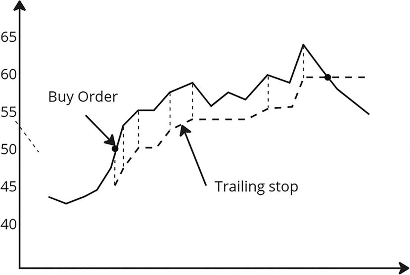
A line graph of an increasing trend with multiple spikes and dips with buy orders at the rising edge. A dashed fluctuating curve is marked below it and labeled the trailing stop.
Figure 2-8
Changing the trailing stop level
This is certainly an incredibly useful tool for a trader. Only outwardly it seems difficult, but after trying it several times, you will definitely like it. Plus, I have been convinced more than once that if you use it on some strategies, their effectiveness noticeably increases.
Portfolio Diversification
Diversification of an investment portfolio is a method of reducing risks and ensuring stable income. It consists of distributing funds between different types of exchange instruments, such as stocks, bonds, precious metals, currencies, and others. This strategy helps protect against losses in the event of a decrease in the profitability of one of the assets, while compensating for the losses of unsuccessful investments through profits from others. However, it is important to note that simply buying shares of different companies does not always count as diversification. For example, owning shares in several oil companies will not create a diversified portfolio because all of these companies belong to the same industry, even though they may be located in different countries. If oil prices fall, the profitability of all these assets may decline.
Therefore, let’s look at diversification methods that actually work:
-
Division by asset class. Thus, bonds are considered the most predictable and stable instruments, including corporate and government securities. But investing in stocks, although they are riskier, can bring good profits when prices rise. Savvy investors also consider futures and options, although these instruments tend to be more unpredictable.
-
Sector division. Each sector of the economy undergoes its own unique development path, and even during periods of crisis, when some of them experience decline, others continue to demonstrate steady growth. Therefore, it is important that the investment portfolio is diverse and includes various sectors, such as the oil and gas industry, aviation manufacturing, pharmaceuticals, information technology, and others.
-
Separation by countries and currencies. Spreading your investments across different currencies provides protection against sharp exchange rate fluctuations. And investing in assets from different countries helps avoid exposure to political and economic problems in one of the unstable countries, since losses can be offset by securities of other countries. Experts advise limiting the share of investments in one asset to 10% of capital and not exceeding a total of 20% for assets belonging to one sector of the economy.
-
Correlation. This shows to what extent the dynamics of the value of one financial instrument correlates with the dynamics of another. To ensure effective diversification, it is important to include instruments with low or inverse correlations in your portfolio. That is, the less the financial instruments are correlated, the more profitable the portfolio. This means that changes in the prices of one asset will be offset by changes in the prices of other assets. In this way, the risk of the investment is spread across different assets, which helps reduce the overall risk level of the portfolio.
Monitoring Market Volatility
The risk of positions can also be assessed by analyzing the volatility of a financial instrument. You can estimate this volatility using the standard deviation. If the standard deviation of an instrument is high, it indicates high risk and uncertain returns. A low standard deviation, on the contrary, implies less volatility and stability of returns. This indicator is especially useful when comparing different instruments.
The formula for calculating the standard deviation can be calculated as follows:
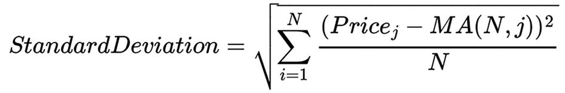
An equation. Standard deviation = the square root of, summation from i = 1 to N, open parenthesis, Price subscript j, minus, M A of N, j, close parenthesis, squared, over, N.
Price__j: Price value on the j-th candle
MA(N, j): Moving average value on the j-th candle
N: Sample size
Let’s look at an example. The trader plans to invest each month in one of two funds. Both funds have an average return of 10%. The first fund has a standard deviation of 5, which means its return can vary from 5% to 15%. A second fund with a deviation of 12 could have a return of -2% to 22%. If a trader prefers to avoid excess volatility and reduce their risks, they are better off choosing the first fund, as it offers the same returns with less volatility.
Testing
Testing the chosen trading strategy on historical data allows you to evaluate its effectiveness without the risk of real financial investments. This practice is based on the assumption that a strategy that has been successful in the past has a high probability of being effective in the present. And receiving positive results during such testing strengthens the trader’s confidence in the prospects of their chosen approach. Negative test results may require changes to parameters or a review of strategy.
One of the challenges associated with backtesting is the possibility of creating a strategy that looks successful on historical data but fails in real trading. For example, often when adjusting a profitability graph obtained during testing or over-optimization, it is possible to create a system that would demonstrate success in tests for a certain historical period, but retesting over a long period would show its uselessness. Therefore, it is important to follow certain rules and not use results adjustment.
For example, the choice of testing period is extremely important. The testing period depends on the time scale of the chart on which the moment of entering the market is determined. There are general recommendations in this matter. For example, when planning to trade on the daily chart, it is recommended to backtest at least the last five years. If you select a shorter time scale, such as less than a day, it is recommended to test for at least one year to account for seasonality. These recommendations are based on statistical requirements for a minimum amount of data. It is important that testing covers not only periods of strong economic growth but also the latest crisis or recession. The longer the period of testing, the more reliable the results obtained will be. This is important because during the economic recovery phase, almost any trend trading strategy brings a good profit, while during a recession or crisis the situation may be different.
You also need to distinguish between different testing approaches. Thus, it is possible to use a complex multistep testing algorithm, starting from preliminary testing, when the trader conducts a quick check without spending a lot of time on tests, and ending with forward and multicurrency multiperiod testing, or you can limit yourself to just classic backtesting.
Classic backtesting involves testing a strategy against historical data, while forward testing gives a more realistic idea of how the strategy will perform in reality, since it uses data that the strategy has never seen before. Multicurrency multiperiod testing, as you might guess from the name, includes testing on different financial instruments and different historical periods, which allows you to assess the stability of the system. The choice of testing stages, as always, depends on the trader and their desires.
Performance Indicators
Of course, after testing, the obtained performance indicators should be adequately assessed. For this, it is important for the trader to determine what results and assessments can be considered acceptable or desirable. It is often considered that the main goal is to achieve high returns, taking into account transaction costs. However, in this case, it would be reasonable to compare returns with other alternatives, such as placing funds on a bank deposit with lower risks and similar returns.
This leads to the first criterion of effectiveness: comparing the profitability of the strategy with the profitability of a bank deposit. After all, taking into account all the risks of exchange trading, active trading makes sense only with significantly higher profitability.
The second criterion is comparison with a long-term buy-and-hold strategy. This strategy involves an investor purchasing financial instruments and not selling them for a long period of time. The investment horizon ranges from several years to several decades. With this approach, it is also important to evaluate the return and risk of active trading with the return and risk of a buy-and-hold strategy.
Thus, the effectiveness of the strategy is assessed not only by the profitability achieved in testing and real trading but also by the return to risk ratio, especially in comparison with alternative long-term strategies. Creating a strategy that improves this ratio is the designer’s task to provide more beneficial results relative to alternative approaches.
The previous two criteria are mandatory to understand, so I highlighted them separately from the rest. They are basic; without them, it is impossible to understand the real picture of your system. But besides them, the effectiveness of any trading strategy can be assessed by more than 50 other parameters. Let’s look at some of the key ones.
Profitability is a percentage return that reflects how much capital is earned in a trading account over a given period. For example, if you had $10,000 at the beginning of the year, and by the end of the year the amount grew to $20,000, then the profitability for the year will be 100% (in the absence of additional infusions or withdrawals of funds). The best calculation method is to calculate profitability over a long period of time and based on a large number of positions. Since earnings of 10% for one position or week are not of much importance if the trader loses 30% in a month, profitability for the year is more significant than the profitability for the month.
The profit factor is calculated as the ratio of absolute income to absolute loss (without taking into account the minus sign). If your system’s profit factor is greater than 1, this indicates its ability to generate profit. However, simply having a profit factor > 1 is not enough. It is important to understand the internal mechanism of the system. Perhaps only one position made a significant contribution to the overall income, while most of the time the system was in the red. A profit factor with a value > 6 is more indicative.
A drawdown is a temporary decrease in the available funds in a trading account caused by the opening of a losing position. Simply put, this is a trader’s loss, which is shown on the chart as a falling yield line and is most often expressed as a percentage.
The following types of drawdowns exist (see Figure 2-9):
-
Current drawdown. This type of drawdown occurs when opening any trading position. When a position is opened, it always starts with a loss equal to the commission established by the brokerage company. Brokers typically make money from the difference between the bid and ask prices they provide on trading platforms. These prices are usually disadvantageous for the trader but are always profitable for the brokers themselves. Therefore, until the position overcomes the distance corresponding to the size of the commission, it will be in a state of drawdown.
-
Recorded drawdown. This drawdown represents the trader’s closed position, which turned out to be unprofitable at the time the decision was made to close the position. This recorded, or, as it is also called, actual drawdown, negatively affects the total volume of the deposit, since it reduces it by the percentage of the loss resulting from the completion of this position.
-
Maximum drawdown. This represents the maximum reduction of your deposit. Simply put, this drawdown shows the maximum loss you have incurred in monetary terms.
-
Absolute drawdown. This drawdown can be equal to zero if the trader immediately began to make a profit from the first positions. This indicator is defined as the difference between the initial capital and its minimum reduction.
-
Relative drawdown. This drawdown represents the maximum loss in percentage terms. The determination method is similar to the maximum drawdown, except that the most significant percentage is considered, not the absolute monetary value.
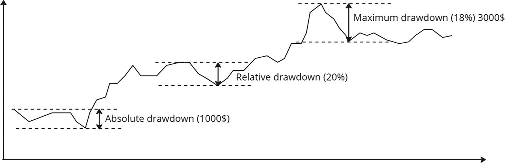
A line graph of an increasing trend with multiple spikes and dips. the absolute drawdown of 1000 dollars is at the trailing edge, the relative drawdown of 20% is at the center, and the maximum drawdown of 18% and 3000 dollars is at the rising edge.
Figure 2-9
Types of drawdowns
Sharpe ratio is a characteristic of income per unit of risk. The higher the Sharpe ratio, the better the return/risk ratio.
Here’s the formula for calculation:
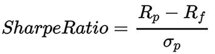
An equation. Sharpe ratio = T subscript p minus R subscript f, over lowercase sigma subscript p.
R__p: The profitability
R__f: The risk-free profitability rate
σ__p: The standard deviation of profitability
This indicator shows how much profit an investor receives for each unit of risk. The higher the value, the more favorable the return in relation to risk is considered. A high Sharpe ratio greater than 1 is generally assessed as “positive,” indicating that the portfolio’s return exceeds its volatility and therefore suggesting excess return relative to the level of risk.
For the average winning trade size and average losing trade size, sum up the results of all profitable positions for a certain period, and then divide this sum by the total number of profitable positions. The resulting value represents the average size of a profitable position. Also add up the results of all losing positions for the same period and divide this sum by the total number of losing positions. This way you will determine the average size of a losing position.
Although most traders strive for the average size of winning positions to be greater than the average size of losing positions, this is not a prerequisite for a successful strategy. But if the average size of positive positions is still greater than the average size of negative positions, trading can remain profitable even with a low ratio of profitable to unprofitable positions. If the average loss exceeds the average profit, a higher ratio of winning to losing positions is required to ensure a profitable trading system.
Expected value is a composite metric that combines the two previously mentioned parameters and provides information on how much a trader can expect to earn on each trade. The formula for calculating the mathematical expectation is as follows:
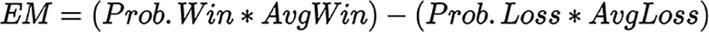
An equation. E M = open parenthesis, Prob Win, asterisk, Avg Win, close parenthesis, minus, open parenthesis, Prob Loss, asterisk, Avg Loss, close parenthesis.
Prob.Win: The percentage of profitable positions
AvgWin: The average winnings
Prob.Win: The percentage of losing positions
AvgWin: The average loss
Essentially, the expected value provides information about the average dollar amount of profit or loss that can be expected over a long-term time horizon.
Optimization
Optimization is the process of tuning the original trading system by adjusting its parameters or group of parameters. This process consists of considering all variations of parameter values within specified boundaries on a time range of historical data for a specific financial instrument. It follows that the main goal of optimization is to determine the optimal parameters of the system for a given time period and take into account the characteristics of a particular financial instrument. And since the trading algorithm mainly determines the opening and closing points of trading positions, changes in the rules for entering and exiting a position entail changes in the overall efficiency of the trading system. Also, the effectiveness of the algorithm may change as market conditions change. This highlights the importance of optimizing a trading system to achieve better results in the current market condition or in the limited future.
The optimization results are evaluated by the values of system performance indicators for each set of optimized parameters. In other words, each set of parameters is tested on a specific period of historical data, and the test results provide information about what results were achieved under these different sets.
Optimization may include various procedures, such as choosing the optimal time frame, choosing optimal stop order values, choosing brokerage trading conditions, choosing the trading algorithm itself, adding confirmation filters, or finding optimal parameter values for an existing system. The choice is certainly great and is limited only by the trader’s capabilities.
To optimize a trading strategy, the following sequence of steps is proposed:
-
Fully describing the strategy. First, describe the entry and exit conditions, a list of financial instruments, time frames, etc. Also take into account the characteristics of the selected asset, the size of the spread, the possible lot sizes, the volatility, and other trading conditions.
-
Preliminary testing of the system for performance to identify possible errors or shortcomings in the description of the trading algorithm.
-
Selecting a source and period of historical data for testing. This can be a unique period for each period.
-
Testing the strategy on a selected interval of historical data.
-
Preparing the system for optimization, including identifying parameters to be optimized.
-
Determining the boundaries of parameter values for optimization, excluding absurd options.
-
Determining performance indicators in the optimization stage. Optimization occurs using some optimization algorithms, such as grid search, random search, genetic algorithms, and simulated annealing. These algorithms systematically work across parameter ranges and evaluate the strategy’s performance for each combination.
-
Selecting the most acceptable parameter values and, if necessary, retesting the system with narrowing the boundaries of the values n number of times.
After completing the optimization process, it is recommended to check the performance of the system under real market conditions.
It is worth mentioning that during the optimization process, various problems are possible that may arise at different stages of its implementation. Let’s look at them in more detail.
-
Optimization time. This is directly related to the number of parameters, the ranges of their possible values, and the volume of historical data. To reduce optimization time, it is recommended to divide it into several stages. In the first stage, all parameters are selected within wide reasonable limits with a large search step. Then, after rough selection, in the second stage the search boundaries are narrowed around the obtained values, and the step is reduced. This approach allows you to find more accurate settings.
-
Inadequate results. These often arise due to the lack of clear restrictions on parameter combinations. Defining commonsense, well-defined constraints on possible parameter combinations helps avoid absurd results.
-
Errors in historical data. Quotation errors cannot be completely avoided, and their presence should be taken into account when evaluating system performance.
-
Human factor. This includes a wide range of possible problems associated with the presence of emotions and irrational assessments of the system. Consideration of the human factor includes constant awareness of the emotional influence on decision-making and the desire for a more objective assessment of the performance of the trading system.
Yet, how can a trader determine whether a trading strategy is optimal? As already noted, the optimization process comes down to systematically changing the values of the parameters of the trading algorithm within a given range to improve the efficiency of the system. For each unique set of parameters, the trading system is tested on a specific financial instrument, time frame, and time interval of historical data. The results of such testing are expressed in the values of certain system performance indicators, some of which we have already reviewed. Based on these values, an optimal set of parameters is selected, which is considered the best for further use.
It turns out that the efficiency of the system when used in real conditions and the efficiency obtained after optimization will depend on the efficiency indicators chosen by the trader or their combination. The goal of proper optimization and analysis is to minimize this difference.
Summary
In this chapter, we looked at the basic concepts of exchange trading, how the process of order execution occurs, and what types of orders there are. We also looked at approaches to developing a trading strategy, the main ones being technical and fundamental analysis. In addition, we examined how the process of generating trading signals takes place based on the formulated trading rules.
We studied the basic methods of capital management and risk control. We learned a little about the process of testing and optimizing a trading strategy.
In the next chapter, we’ll dive right into my approach to creating an automated trading system. We’ll start with the architectural solution.